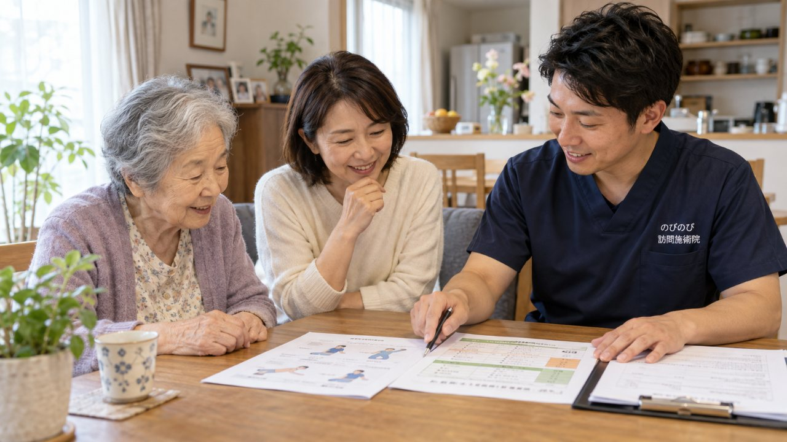

「訪問鍼灸マッサージって、介護保険で受けるの？それとも医療保険？」。ご家族やケアマネジャーから、まず聞かれるのがこの点です。デイサービスやヘルパーはすっかり生活の一部になっているぶん、同じ在宅サービスの仲間だと思われることが多いのですが、じつは使う保険の種類が違います。ここが分かると、費用の見通しも、ほかのサービスとの組み合わせ方も、整理しやすくなります。
短くまとめます。のびのびの訪問鍼灸マッサージは、医師の同意にもとづく医療保険（はり・きゅう）で受けるサービスです。デイサービスや訪問介護、訪問リハビリなどの介護保険とは、根っこの制度が異なります。だから介護保険の区分支給限度額とは別枠で、限度額を使い切っていても圧迫せずに組み合わせられます。要介護認定がなくても、医師の同意書があれば利用できます。費用は1回の施術で総額3,950円、1割負担なら約395円が目安。介護サービスと日時が重ならないよう調整すれば、無理なく併用できます。
訪問鍼灸マッサージは、医師の同意でつかう医療保険
最初に結論だけ先にお伝えします。のびのびの訪問鍼灸マッサージは、医師の同意にもとづく医療保険（療養費）で受けるサービスです。デイサービスやヘルパーと同じ「家に来てくれるケア」に見えても、お金の出どころが違います。ここを取り違えたまま話が進むと、「介護の枠に入るのか」「認定がいるのか」と、あとで混乱しがちです。
訪問するのは、はり師・きゅう師・あん摩マッサージ指圧師という国家資格を持つ施術者です。医師が慢性的な痛みやしびれに治療が必要と認めた場合に、その費用が療養費というしくみでまかなわれます。介護保険からは給付されません。だから介護のプランとは切り離して考えて大丈夫です。
医療保険と介護保険、どこで線を引くのか
ふたつの保険は、そもそも狙いが別ものです。医療保険は病気やけがを治すためのしくみ。坐骨神経痛や五十肩、腰痛、脳梗塞のあとに残ったこわばりなど、医師が治療の必要を認めた症状へのケアは、こちら側に入ります。訪問鍼灸マッサージもここです。
いっぽう介護保険は、毎日の暮らしを支えるためのしくみです。デイサービスに通う、ヘルパーに来てもらう、福祉用具を借りる。こうした生活の支えはこちらから出ています。目的も財源ももとから分かれているので、両方を同時に使えます。鍼灸を受けるために介護のサービスをがまんする、という理屈にはなりません。
「要介護認定がないと受けられない」という思い込み
問い合わせで多いのが、「まだ要介護認定を受けていないのですが」という前置きです。認定がないと使えないと思い込んでいる方が、本当に多い。でも訪問鍼灸マッサージに、要介護認定はいりません。使うのが医療保険だからです。要支援・要介護がついていない方も、申請中の方も、年齢に関係なく受けられます。
そのかわり欠かせないのが、かかりつけ医の同意書です。「この方にははり・きゅうによる治療が必要だ」と医師が認める書類で、これがあってはじめて療養費の対象になります。「先生に頼みにくい」という声はよく聞きますが、依頼書の準備や医療機関とのやりとりはのびのびが段取りします。ご家族が一から病院にお願いに行かれる場面は、まずありません。
介護の限度額がいっぱいでも、鍼灸は足せる
介護保険には、要介護度ごとに「1か月にこれだけまで」という区分支給限度額があります。デイやヘルパーを増やすほど枠は埋まっていき、超えた分は全額自己負担。ケアマネジャーが毎月やりくりしているのは、この枠です。「もう限度額がいっぱいで、これ以上は組めない」。そう言われて、体のケアをあきらめかけるご家族もいます。
ここが、この記事でいちばんお伝えしたいところです。訪問鍼灸マッサージは医療保険なので、介護保険の限度額とは別枠。鍼灸を足しても、介護の枠はいっさい減りません。ケアマネジャーに相談するときは、「介護保険とは別枠の、医療保険の鍼灸を入れたい」と一言そえると話が早く通ります。デイもヘルパーもそのままに、痛みのケアだけを上乗せできる、と考えてください。
デイやヘルパーと二重取りにならないか
「別のサービスと重ねて、二重に払うことにならないか」。ここも気にされる方が多い点です。医療保険と介護保険は別のしくみなので、デイサービスや訪問介護と訪問鍼灸マッサージを同じ月に使っても、二重取りにはなりません。気をつけるのは、同じ時間帯にサービスが重ならないよう日時をずらすこと。それだけで両立します。
ひとつだけ、実務上の注意があります。同じ部位について、医療保険のリハビリと鍼灸を同時に算定することはできません。医療機関でその部位のリハビリを受けている方は、事前の整理が必要です。なお、介護保険の訪問リハビリとは目的も制度も違うため、両方を受けている方もいます。訪問リハとの違いはこちらの記事でくわしく説明しています。
料金と、月々の負担のめやす
費用は、公的医療保険にもとづく正規の料金です。1回の施術は総額3,950円。自己負担は1割の方で約395円、2割の方で約790円、3割の方で約1,185円が目安です。特別な割引ではありません。
月でならすと、1割の方が週2回でおよそ3,160円が目安になります。お支払いは月ごとにまとめてで、その月の施術内容のわかる明細をお渡しします。介護の限度額とは別枠なので、「枠を超えて全額負担になった」という心配はありません。料金の内訳は料金の記事にも整理してあります。
迷ったら、まずケアマネジャーへ
「医療保険と介護保険、うちの場合はどちらで受けるのがいいのか」。判断に迷うときは、担当のケアマネジャーに相談するのが近道です。ケアマネジャーは介護のサービス全体を見渡しているので、鍼灸を組み合わせたときの一日の流れまで一緒に考えてくれます。同意書のことも含めて、のびのびからも分かりやすくご説明します。
のびのびが伺えるのは、大阪府の豊中市・吹田市・茨木市・高槻市・箕面市・摂津市・池田市、大阪市の淀川区・東淀川区・都島区・北区・旭区、兵庫県の尼崎市・伊丹市です。エリア内なら、別途の出張費や交通費はかからず、どこでも同額です。まずは気軽にお問い合わせください。
よくある質問
訪問鍼灸マッサージは医療保険ですか、介護保険ですか？
医療保険です。医師の同意にもとづく、はり・きゅうの療養費というしくみで受けます。デイサービスや訪問介護、訪問リハビリなどの介護保険とは、使う制度が異なります。
介護保険の区分支給限度額を使ってしまいますか？
いいえ。訪問鍼灸マッサージは医療保険のサービスなので、介護保険の限度額とは別枠です。鍼灸の費用が限度額を減らすことはなく、デイやヘルパーで限度額を使い切っていても圧迫しません。
要介護認定を受けていなくても受けられますか？
受けられます。訪問鍼灸マッサージは医療保険のしくみなので、要介護認定の有無は関係ありません。かかりつけの医師の同意書があれば、認定がなくても利用できます。
デイサービスや訪問介護と併用できますか？
はい。医療保険と介護保険は別のしくみなので併用できます。同じ時間帯に重ならないよう日時を合わせれば大丈夫です。ケアマネジャーと連携しながら、生活のリズムに合わせて調整します。
訪問リハビリと訪問鍼灸マッサージは、両方受けられますか？
目的も使う制度も違うため、両方を受けている方もいらっしゃいます。訪問リハビリは主に介護保険の機能訓練、訪問鍼灸マッサージは医療保険で痛みやしびれを和らげるケアです。同じ部位・同じ病名でのリハビリと鍼灸の同時利用には決まりがあるので、状況をお聞かせいただければ一緒に整理します。
費用はどのくらいかかりますか？
1回の施術で総額3,950円、1割負担の方で約395円、2割で約790円が目安です。1割の方なら週2回でひと月およそ3,160円ほど。介護保険の限度額とは別に考えられます。
支払いは、どのようにしますか？
月ごとにまとめてお支払いいただく形が基本です。内訳はあとからでも確認できます。エリア内であれば出張費や交通費の上乗せはなく、どこでも同額です。
同意書は自分で用意しないといけませんか？
いいえ。かかりつけの医師への依頼書の準備から医療機関とのやりとりの段取りまで、のびのびが進めます。ご家族が一から病院にお願いに行っていただく必要は、ほとんどありません。
この記事の根拠
はり・きゅう、あん摩マッサージ指圧の療養費は、厚生労働省が定めた取扱いにもとづく制度です。制度そのものをご自身で確かめたいときは、厚生労働省の療養費について（新しいタブで開きます）をご覧ください。「被保険者のみなさまへ」の案内も、同じページからたどれます。

要介護認定がなくても訪問鍼灸マッサージは受けられる？｜介護保険との関係
続きを読む
介護保険の限度額がいっぱいでも足せる「もう一手」<br>医療保険の訪問鍼灸マッサージ
続きを読む
デイサービスや通所リハと訪問鍼灸マッサージは併用できる？｜介護保険との組み合わせ
続きを読む
在宅で受けられるサービスの違い早見表｜役割と保険の枠をまとめて整理
続きを読む
訪問鍼灸マッサージ、ケアマネジャーに相談したほうがいい？｜ケアプランとの関係
続きを読む